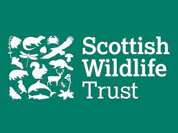

This is going to be about how the Scottish Wildlife Trust is a great charity and how They influnce lots of people to get onboard with there projects And there succes that has come with all what they have done.
The Scottish Wildlife Trust is a company that has been running for 50 yers and they try to make the ecosytem and our land a bettr place for everyone in the world.
Another thing the Scottish Wildlife Trust does is it does policy and compaigning work, which encourages people around to do what is best for the envirmoent through education and enviromental activities. And Also has its own network around the world with 120 people involved around scotland
The Scottish Wildelife Trust is based in Edinbrugh but they are all over scotland these are just some of the places that they are located in , Inverness , Edinbrugh , Glasgow, Aberdeen, They are just some mostly located in the middle of scotland but all over as a group. Also the Focus Groups for The Wildlife Trust They are Resposible for the Projects , Planning , Fundrasing etc.
There are 6 animals that you can adopt from the Scottish Wildlife Trust snd those animals are animals that need lots of care and lokked after mostof the time during your adoption those are Beaver, Otter, Puffin, Squirel, Garden Bumblee Bee, Harbour Seal.
This Video Contains Higlights of Some The Animals that they Take Care Off.
This is Another Video That Contains Higlights of Some The Animals that they Take Care Off.